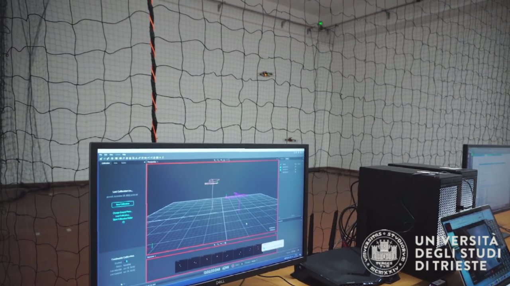

Resilient Multi-Agent Control
Coordination and control of multiple autonomous agents, with an emphasis on resilience to disturbances, uncertainty and challenging operating conditions.
An experimental environment for autonomous systems, advanced flight control and multi-agent robotics at the University of Trieste.
The Drone Lab at the University of Trieste is an indoor experimental facility dedicated to education and research in unmanned aerial systems, automatic control and autonomous robotics.
It brings together theoretical methods, simulation and real-world experimentation, enabling students and researchers to design, implement and evaluate control strategies on physical aerial platforms.
The laboratory is based on a Drone Lab platform supplied by ANT-X, supporting hands-on learning and experimental validation.
Our work focuses on robust, adaptive and intelligent approaches to controlling autonomous and interconnected dynamical systems.
Coordination and control of multiple autonomous agents, with an emphasis on resilience to disturbances, uncertainty and challenging operating conditions.
Data-driven methods and learning algorithms for control design, adaptation and improved performance in dynamical systems.
Model-based control methods that account for uncertainty and disturbances, bridging rigorous theoretical analysis and experimental validation.
The Drone Lab is equipped with a laboratory solution acquired from ANT-X, designed for research and education in flight robotics and UAV control.
The ANT-X Drone Lab product family integrates indoor quadrotor platforms, motion tracking, software for controller development and educational resources. The exact configuration installed at UniTS can be documented here as additional details become available.
Explore ANT-X Drone Lab ↗
The laboratory provides an experimental environment for Bachelor's and Master's thesis projects, allowing students to investigate, develop, and validate advanced control strategies on real systems.
Students can explore modelling, controller design and the behaviour of aerial systems through practical experiments.
A setting for comparing simulated behaviour with physical flight tests and discussing model limitations.
A controlled environment for developing and evaluating new methods for autonomous flight and coordination.
An opportunity to study cooperative behaviour and distributed control using aerial robotic platforms.
Meet the researchers and collaborators connected to the Drone Lab and its activities in automatic control.
Automatic Control · University of Trieste
Automatic Control · University of Trieste / Imperial College London
Automatic Control · University of Trieste
Control Theory, Machine Learning and Computer Vision
Automatic Control · University of Trieste
PhD Student · University of Trieste
Department of Engineering and Architecture
University of Trieste · Trieste, Italy
Lab lead: Erica Salvato
ERICA.SALVATO@dia.units.it